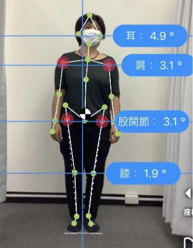
施術前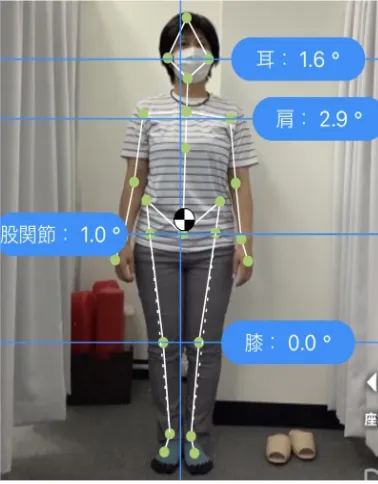
施術後AIで股関節に負担がかかる原因を見える化。
国家資格の院長が骨盤から整えます。
カウンセリング・AI姿勢分析・施術・セルフケア指導まで含みます。
⚠ 1日の体験枠には限りがあります
ひとつでも当てはまる方は、
股関節以外に
原因があるかもしれません。
股関節の不調は、股関節そのものよりも骨盤や姿勢のくずれから起きていることが少なくありません。土台がずれたままでは、脚の付け根だけほぐしても負担がかかり続けます。
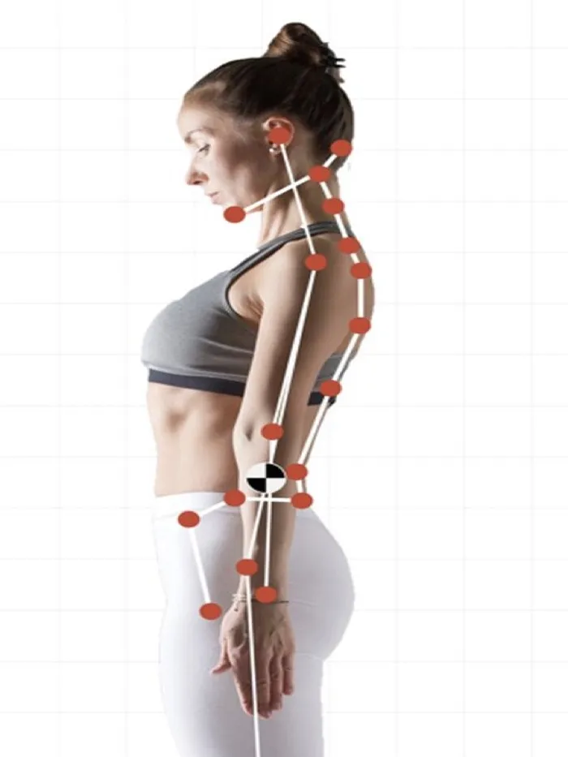
長時間座っていると、脚の付け根の筋肉が縮こまり、股関節の動きが小さくなっていきます。
片脚に体重をかける、脚を組むなどのクセで、左右の股関節に負担の差が生まれます。
骨盤が前後・左右に傾くと、股関節の位置がずれ、歩くたびに負担がかかります。
だからNAORU整体は、
まず「どこがずれているか」を測ることから始めます。
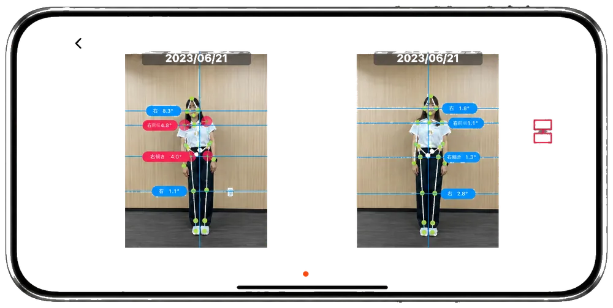
全身33か所のポイントを検出し、骨盤や股関節・ひざの傾きなどを数値で確認します。施術前後の変化もその場で比較できるので、「なんとなく楽」で終わりません。
新潟院での姿勢分析の例
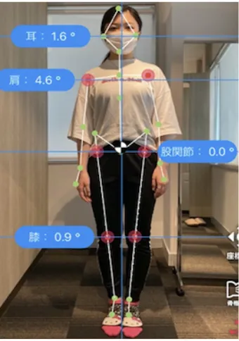
BEFORE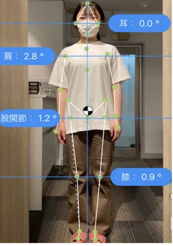
AFTER※新潟院のお客様の施術前後のAI姿勢分析画面です。結果には個人差があり、効果を保証するものではありません。
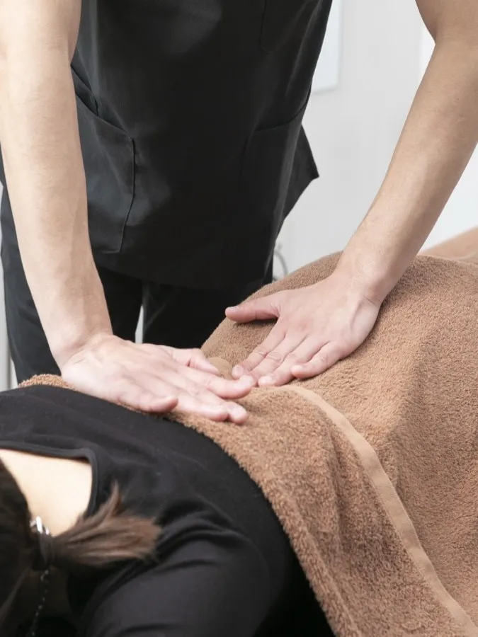
新潟院の院長は柔道整復師（国家資格）。股関節だけでなく、骨盤・背骨・ひざまわりまで、分析結果にもとづいて全身を整えます。
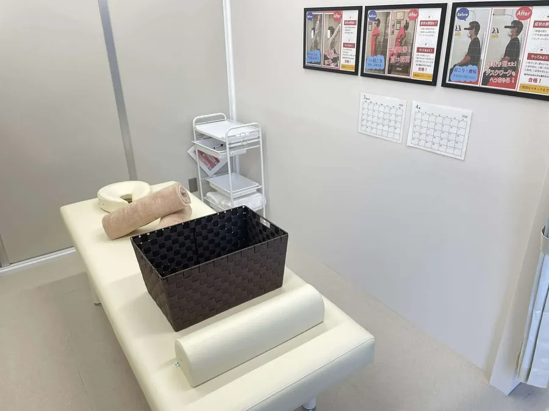
仕事帰りや買い物ついでに寄りやすい駅近立地。清潔で落ち着いた院内で、リラックスして施術を受けられます。施術後には、自宅でできるセルフケアもお伝えします。
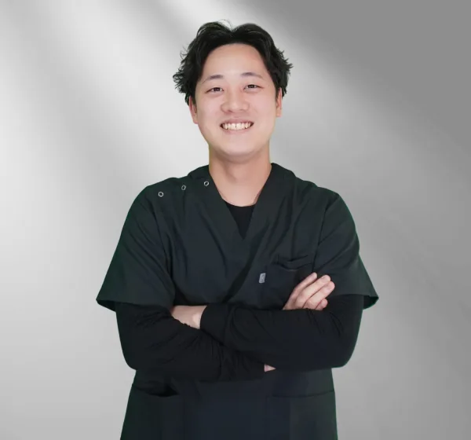
院長／柔道整復師（国家資格）
小川 泰輝おがわ たいき
新潟エリアで首肩こりや腰痛、姿勢不良に悩む方に寄り添い、根本改善を目指した施術を行っています。痛みを一時的に和らげるだけでなく、「なぜ不調が起きているのか」を大切にしています。お体のことでお悩みがあれば、ぜひ一度ご相談ください。
あちこち行ってみてはその場限りの整体を体験して来ましたが、こちらは身体の歪みや痛みにきちんとアプローチして、確実に矯正されている。骨盤周りが歪んだままの状態が続いていましたが、通うたびに身体が変わっていくのを感じています。（一部抜粋）
2026/9/5 投稿
身体の柔軟性が確実に改善していることを実感できる施術と思います。お勧めします。
2026/9/13 投稿
AIで姿勢をチェックしてくれて面白いです。通い続けて改善が見られてきました！
2026/9/20 投稿
1回の施術でも身体が楽になるのを実感します。通い続けて、辛いところが改善してきました！
2026/9/22 投稿
※口コミはホットペッパービューティーより引用（2026年10月時点）。感じ方には個人差があります。
※国家資格者の割合・店舗数はNAORU整体グループ全体の数値です。
股関節のどこが・いつから・どんな動きでつらいか、お仕事や生活習慣などを伺います。
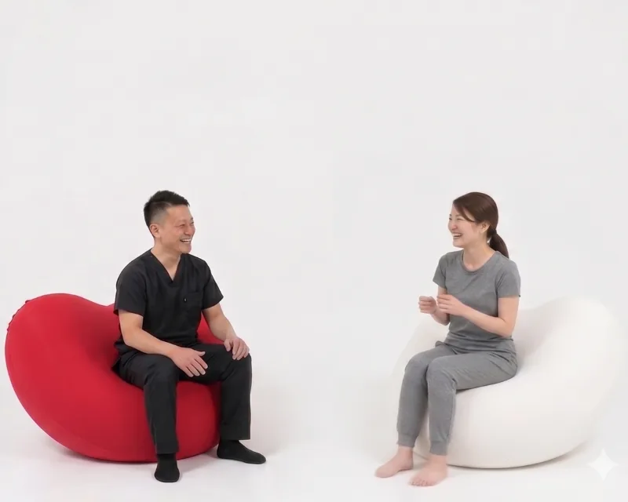
正面・側面から撮影し、骨盤や脚のバランスを数値で確認。股関節に負担がかかる原因をわかりやすくご説明します。
分析結果にもとづき、骨盤・股関節まわりを中心に、背骨やひざまで全身を整えます。
施術後にもう一度分析し、前後を比較。ご自宅でできるストレッチもお伝えします。
※所要時間は目安です。初回は全体で60分前後を見ておいてください。
| AI姿勢分析つき 股関節整体（初回60分） AI姿勢分析つき・Web広告限定 | |
|---|---|
| 全身整体コース（AI姿勢分析つき） | 15,400円 |
| 猫背矯正コース | 6,600円 |
| 骨盤矯正コース | 6,600円 |
※表示価格はすべて税込です。
※2回目以降は、お体の状態に合わせて月額プラン（縛りなし・いつでも解約可）などをご案内します。無理におすすめすることはありません。
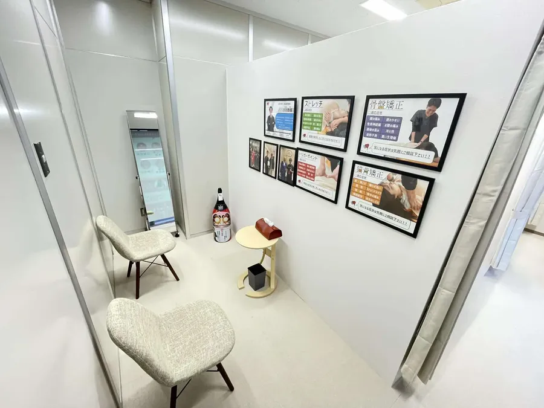
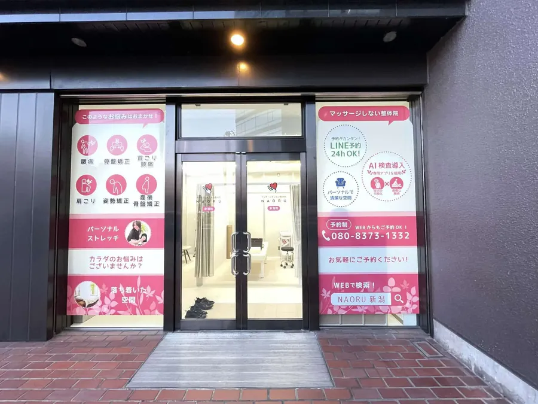
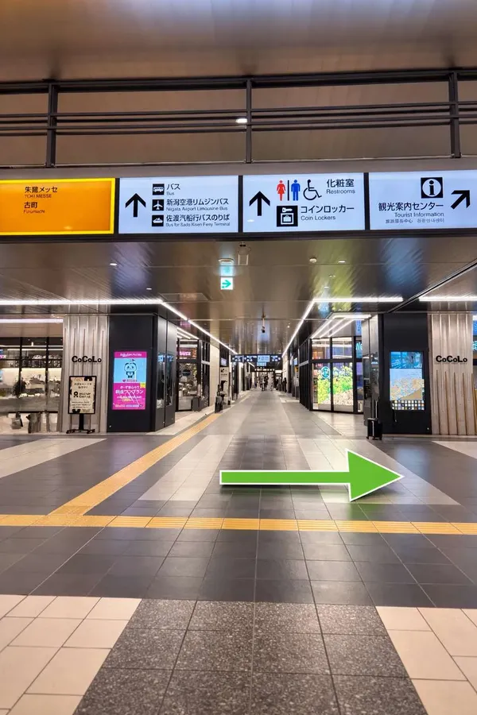
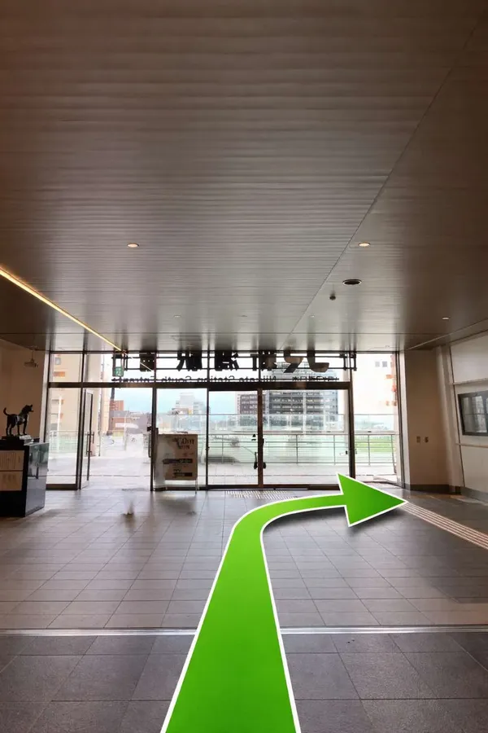
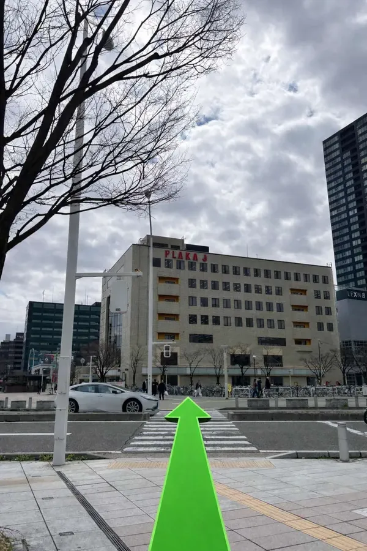
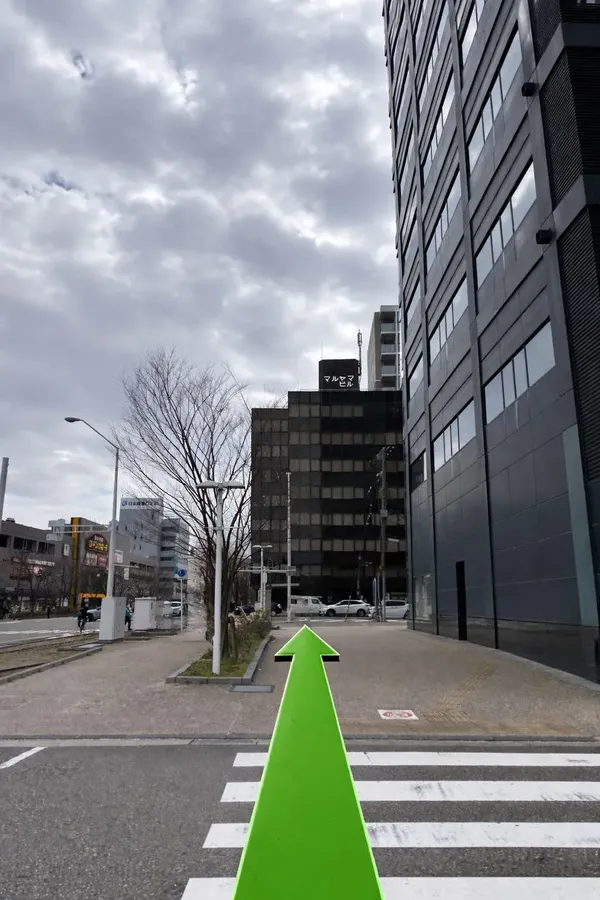
横にスワイプ →
院長の小川です。「どこがずれているか」を一緒に確認するところから始めましょう。お会いできるのを楽しみにしています。
⚠ 1日の体験枠には限りがあります